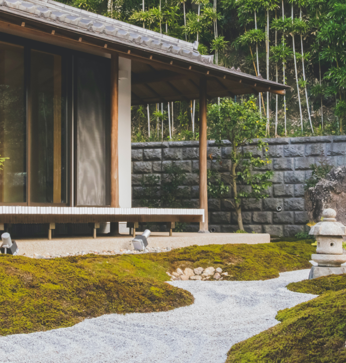

<section class="about bg-green overflow-hidden">
	<div class="about__content-container grid md:w-11/12 mx-auto">
		<picture class="about__img h-full">
			
		</picture>
		<section
			class="about__content text-gray px-5 py-10 md:grid place-content-center md:py-16"
		>
			<a href="#" class="text-xs mb-4 md:mb-6">O firmie</a>
			<section class="mb-10 md:mb-14 lg:mb-20">
				<h2 class="about__heading mb-5 md:mb-14">
					Tworzymy z
					<span class="font-inter italic"> pasją</span>
				</h2>
				<p class="md:max-w-prose">
					Każdy projekt to nowe wyzwanie. Dlatego nasz zespół tworzą
					wykwalifikowani projektanci oraz architekci, których
					zadaniem jest rozpoznanie i realizacja potrzeb każdego
					Klienta. Nasza specjalizacja to przestrzenie nowoczesne,
					które charakteryzuje minimalizm, geometria i elegancka
					prostota. Tworzymy ogrody małoobsługowe, dostosowane do
					współczesnego trybu życia.
				</p>
			</section>
			<a
				href="#"
				type="button"
				class="btn flex gap-2 border-2 border-gray rounded-full w-fit"
			>
				<p>Poznaj nas bliżej</p>
				<picture class="-rotate-90">
					<svg
						xmlns="http://www.w3.org/2000/svg"
						fill="none"
						viewBox="0 0 24 24"
						stroke-width="1.5"
						stroke="#F5F0EC"
						class="w-6 h-6"
					>
						<path
							stroke-linecap="round"
							stroke-linejoin="round"
							d="M19.5 13.5L12 21m0 0l-7.5-7.5M12 21V3"
						/>
					</svg>
				</picture>
			</a>
		</section>
	</div>
</section>
